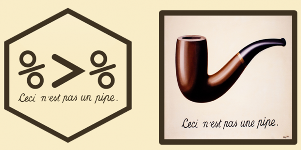
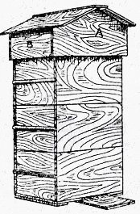

3 Code
Effective Data Science is still a work-in-progress. This chapter should be readable but is currently undergoing final polishing.
If you would like to contribute to the development of EDS, you may do so at https://github.com/zakvarty/data_science_notes.
3.1 Introduction
We have already described how we might organise an effective data science project at the directory and file level. In this chapter we will delve one step deeper and consider how we can structure our work within those files. In particular, we’ll focus on code files here.
We’ll start by comparing the two main approaches to structuring our code, namely functional programming and object oriented programming. We’ll then see how we should order code within our scripts and conventions on how to name the functions and objects that we work with in our code.
Rounding up this chapter, we’ll summarise the main points from the R style guide that we will be following in this course and highlight some useful packages for writing effective code.
3.2 Functional Programming
A functional programming style has two major properties:
Object immutability,
Complex programs written using function composition.
This first point here states that the original data or objects should never be modified or altered by the code we write. We have met this idea before when making new, cleaner versions of our raw data but taking care to leave the original messy data intact. Object immutability is the exact same idea but in a code context rather than data context.
Secondly, in functional programming, complex problems are solved by decomposing them into a series of smaller problems. A separate, self-contained function is then written to solve each sub-problem. Each individual function is, in itself, simple and easy to understand. This makes these small functions easy to test and easy to reuse in many places. Code complexity is then built up by composing these functions in various ways.
It can be difficult to get into this way of thinking, but people with mathematical training often find it quite natural. This is because mathematicians have many years of experience in working with function compositions in the abstract, mathematical sense.
\[y = g(x) = f_3 \circ f_2 \circ f_1(x).\]
3.2.1 The Pipe Operator
One issue with functional programming is that lots of nested functions means that there are also lots of nested brackets. These start to get tricky to keep track of when you have upwards of 3 functions being composed. This reading difficulty is only exacerbated if your functions have additional arguments on top of the original inputs.
The pipe operator %>% from the magrittr package helps with this issue. It works exactly like function composition: it takes the whatever is on the left (whether that is an existing object or the output of a function) and passes it to the following function call as the first argument of that function.
The pipe operator is often referred to as “syntactic sugar”. This is because it doesn’t add anything to your code in itself, but rather it makes your code so much more palatable to read.
In R versions 4.1 and greater, there’s a built-in version of this pipe operator,|>. This is written using the vertical bar symbol followed by a greater than sign. To type the vertical bar, you can usually find it found above backslash on the keyboard. (Just to cause confusion, the vertical bar symbol is also called the pipe symbol and performs a similar operation in general programming contexts.)
iris |>
head(n = 3)
#> Sepal.Length Sepal.Width Petal.Length Petal.Width Species
#> 1 5.1 3.5 1.4 0.2 setosa
#> 2 4.9 3.0 1.4 0.2 setosa
#> 3 4.7 3.2 1.3 0.2 setosaThe base R pipe usually behaves in the same way as the pipe from magrittr, but there are a few cases where they differ. For reasons of back-compatibility and consistency we’ll stick to the {magrittr} pipe in this course.
3.2.2 When not to pipe

Pipes are designed to put focus on the the actions you are performing rather than the object that you are preforming those operations on. This means that there are two cases where you should almost certainly not use a pipe.
The first of these is when you need to manipulate more than one object at a time. Using secondary objects as reference points (but leaving them unchanged) is of course perfectly fine, but pipes should be used when applying a sequence of steps to create a new, modified version of one primary object.
Secondly, just because you can chain together many actions into a single pipeline, that doesn’t mean that you necessarily should. Very long sequences of piped operations are easier to read than nested functions, however they still burden the reader with the same cognitive load on their short term memory. Be kind and create meaningful, intermediate objects with informative names. This will help the reader to more easily understand the logic within your code.
3.3 Object Oriented Programming
The main alternative to functional programming is object oriented programming.
- Solve problems by using lots of simple objects
- R has 3 OOP systems: S3, S4 and R6.
- Objects belong to a class, have methods and fields.
- Example: agent based simulation of beehive.
3.3.1 OOP Philosophy
In functional programming, we solve complicated problems by using lots of simple functions. In object oriented programming we solve complicated problems using lots of simple objects. Which of these programming approaches is best will depend on the particular type of problem that you are trying to solve.
Functional programming is excellent for most types of data science work. Object oriented comes into its own when your problem has many small components interacting with one another. This makes it great for things like designing agent-based simulations, which I’ll come back to in a moment.
In R there are three different systems for doing object oriented programming (called S3, S4, and R6), so things can get a bit complicated. We won’t go into detail about them here, but I’ll give you an overview of the main ideas.
This approach to programming might be useful for you in the future, for example if you want to extend base R functions to work with new types of input, and to have user-friendly displays. In that case (Advanced R)[https://adv-r.hadley.nz/] by Hadley Wickham is an excellent reference text.
In OOP, each object belongs to a class and has a set of methods associated with it. The class defines what an object is and methods describe what that object can do. On top of that, each object has class-specific attributes or data fields. These fields are shared by all objects in a class but the values that they take give information about that specific object.
3.3.2 OOP Example

This is is all sounding very abstract. Let’s consider writing some object oriented code to simulate a beehive. Each object will be a bee, and each bee is an instance of one of three bee classes: it might be a queen, a worker or a drone for example. Different bee classes have different methods associated with them, which describe what the bee can do, for example all bees would have 6 methods that let them move up, down, left, right, forward and backward within the hive. An additional “reproduce” method might only be defined for queen bees and a pollinate method might only be defined for workers. Each instance of a bee has its own fields, which give data about that specific bee. All bees have x, y and z coordinate fields giving their location within the hive. The queen class might have an additional field for their number of offspring and the workers might have an additional field for how much pollen they are carrying.
As the simulation progresses, methods are applied to each object altering their fields and potentially creating or destroying objects. This is very different from the preservation mindset of functional programming, but hopefully you can see that it is a very natural approach to many types of problem.
3.4 Structuring R Script Headers
TL;DR
- Start script with a comment of 1-2 sentences explaining what it > does.
setwd()andrm(ls())are the devil’s work.- “Session” > “Restart R” or Keyboard shortcut: crtl/cmd + shift > + 0
- Polite to gather all
library()andsource()calls.- Rude to mess with other people’s set up using >
install.packages().- Portable scripts use paths relative to the root directory of the project.
First things first, let’s discuss what should be at the top of your R scripts.
It is almost always a good idea to start your file with a few commented out sentences describing the purpose of the script and, if you work in a large team, perhaps who contact with any questions about this script. (There is more on comments coming up soon, don’t worry!)
It is also good practise to move all library() and source() calls to the top of your script. These indicate the packages and helper function that are dependencies of your script; it’s useful to know what you need to have installed before trying to run any code.
That segues nicely to the next point, which is never to hard code package installations. It is extremely bad practise and very rude to do so because then your script might alter another person’s R installation. If you don’t know already, this is precisely the difference between an install.packages() and library() call: install.packages() will download the code for that package to the users computer, while library() takes that downloaded code and makes it available in the current R session. To avoid messing with anyone’s R installation, you should always type install.package() commands directly in the console and then place the corresponding library() calls within your scripts.
Next, it is likely that you, or someone close to you, will commit the felony of starting every script by setting the working directory and clearing R’s global environment. This is very bad practice, it’s indicative of a workflow that’s not project based and it’s problematic for at least two reasons. Firstly, the path you set will likely not work on anyone else’s computer. Secondly, clearing the environment like this may look like it gets you back to fresh, new R session but all of your previously loaded packages will still be loaded and lurking in the background.
Instead, to achieve your original aim of starting a new R session, go to the menu and select the “Session” drop down then select “Restart R”. Alternatively, you can use keyboard shortcuts to do the same. This is “crtl + shift + 0” on Windows and “cmd + shift + 0” on a mac. The fact that a keyboard shortcut exists for this should quite strongly hint that, in a reproducible and project oriented workflow, you should be restarting R quite often in an average working day. This is the scripting equivalent of “clear all output and rerun all” in a notebook.
Finally, let’s circle back to the point I made earlier about setting the working directory. The reason that this will not work is because you are likely giving file paths that are specific to your computer, your operating system and your file organisation system. The chances of someone else having all of these the same are practically zero.
3.5 Portable File paths with {here}
# Bad - breaks if project moved
source("zaks-mbp/Desktop/exciting-new-project/src/helper_functions/rolling_mean.R")
# Better - breaks if Windows
source("../../src/helper_functions/rolling_mean.R")
# Best - but use here:here() to check root directory correctly identified
source(here::here("src","helper_functions","rolling_mean.R"))
# For more info on the here package:
vignette("here")To fix the problem of person- and computer-specific file paths you can have two options.
The first is to use relative file paths. In this you assume that each R script is being run in its current location and my moving up and down through the levels of your project directory you point to the file that you need.
This is good in that it solves the problem of paths breaking because you move the project to a different location on your own laptop. However, it does not fully solve the portability problem because you might move your file to a different location within the same project. It also does not solve the problem that windows uses MacOS and linux use forward slashes in file paths with widows uses backslashes.
To resolve these final two issues I recommend using the here() function from the {here} package. This package looks for a .Rproj or .git file to identify the root directory of your project and creates file paths relative to the root of your project, that are suitable for the operating system the code is being run on.
It really is quite marvellous. For more information on how to use the here package, explore its chapter in R - What They Forgot, R for Data Science or this project oriented workflow blog post.
3.6 Code Body
Moving on now, we will go from the head to the body of the code. Having well named and organised code will facilitate both reading and understanding. Comments and sectioning do the rest of this work.
This section is designed as an introduction to the tidyverse style guide and not as a replacement to it. ### Comments
# This is an example script showing good use of comments and sectioning
library(here)
source(here("src","helper_functions","rolling_mean.R"))
#=============================================================================== <- 80 characters max for readability
# Major Section on Comments ----
#===============================================================================
#-------------------------------------------------------------------------------
## Minor Section on inline comments ----
#-------------------------------------------------------------------------------
x <- 1:10 # this is an inline comment
#-------------------------------------------------------------------------------
## Minor Section on full line comments ----
#-------------------------------------------------------------------------------
rolling_mean(x)
# This is an full line commentComments may be either short in-line comments at the end of a line or full lines dedicated to comments. To create either type of comment in R, simply type hash followed by one space. The rest of that line will not be evaluated and will function as a comment. If multi-line comments are needed simply start multiple lines with a hash and a space.
The purpose of these comments is to explain the why of what you are doing, not the what. If you are explaining what you are doing in most of your comments then you perhaps need to consider writing more informative function names, something we will return to in the general advice section.
Comments can also be used to add structure to your code, buy using commented lines of hyphens and equal signs to chunk your files into minor and major sections.
Markdown-like section titles can be added to these section and subsection headers. Many IDEs, such as RStudio, will interpret these as a table of contents for you, so that you can more easily navigate your code.
3.6.1 Objects are Nouns
Object names should use only lowercase letters, numbers, and
_.Use underscores (
_) to separate words within a name. (snake_case)Use nouns, preferring singular over plural names.
# Good
day_one
day_1
# Bad
first_day_of_the_month
DayOne
dayone
djm1When creating and naming objects a strong guideline in that objects should be named using short but meaningful nouns. Names should not include any special characters and should use underscores to separate words within the object name.
This is similar to our file naming guide, but note that hyphens can’t be used in object names because this conflicts with the subtraction operator.
When naming objects, as far as possible use singular nouns. The main reason for this is that the plurisation rules in English are complex and will eventually trip up either you or a user of your code.
3.6.2 Functions are Verbs
Function names should use only lower-case letters, numbers, and
_.Use underscores (
_) to separate words within a name. (snake_case)Suggest imperative mood, as in a recipe.
Break long functions over multiple lines. 4 vs 2 spaces.
# Good
add_row()
permute()
# Bad
row_adder()
permutation()
long_function_name <- function(
a = "a long argument",
b = "another argument",
c = "another long argument") {
# As usual code is indented by two spaces.
}The guidelines for naming functions are broadly similar, with the advice that functions should be verbs rather than nouns.
Functions should be named in the imperative mood, like in a recipe. This is again for consistency; having function names in a range of moods and tenses leads to coding nightmares.
As with object names you should aim to give your functions and their arguments short, evocative names. For functions with many arguments or a long name, you might not be able to fit the function definition on a single line. In this case you can should place each argument on its own double indented line and the function body on a single indented line.
3.6.3 Casing Consistantly
As we have mentioned already, we have many options for separating words within names:
CamelCasepascalCasesnakecase-
underscore_separated❤️ hyphen-separated-
point.separated💀
For people used to working in Python it is tempting to use point separation in function names, in the spirit of methods from object oriented programming. Indeed, some base R functions even use this convention.
However, the reason that we advise against it is because it is already used for methods in some of R’s inbuilt OOP functionality. We will use underscore separation in our work.
3.6.4 Style Guide Summary
- Use comments to structure your code
- Objects = Nouns
- Functions = Verbs
- Use snake case and consistant grammar
3.7 Further Tips for Friendly Coding
In addition to naming conventions the style guide gives lots of other guidance on writing code in a way that is kind to future readers of that code.
I’m not going to go repeat all of that guidance here, but the motivation for all of these can be boiled down into the following points.
Write your code to be easily understood by humans.
Use informative names, typing is cheap.
- Divide your work into logical stages, human memory is expensive.
When writing your code, keep that future reader in mind. This means using names that are informative and reasonably short, it also means adding white space, comments and formatting to aid comprehension. Adding this sort of structure to your code also helps to reduce the cognitive burden that you are placing on the human reading your code.
Informative names are more important than short names. This is particularly true when using flow controls, which are things like for loops and while loops. Which of these for loops would you like to encounter when approaching a deadline or urgently fixing a bug? Almost surely the second one, where context is immediately clear.
A computer doesn’t care if you call a variable by only a single letter, by a random key smash (like aksnbioawb) or by an informative name. A computer also doesn’t care if you include no white space your code - the script will still run. However, doing these things are friendly practices that can help yourself when debugging and your co-workers when collaborating.
3.8 Reduce, Reuse, Recycle
In this final section, we’ll look at how you can make your workflow more efficient by reducing the amount of code you write, as well as reusing and recycling code that you’ve already written.
3.8.1 DRY Coding
This idea of making your workflow more efficient by reducing, reusing and recycling your code is summarised by the DRY acronym: don’t repeat yourself.
This can be boiled down to three main points:
- if you do something twice in a single script, then write a function to do that thing;
- if you want to use your function elsewhere within your project, then save it in a separate script;
- If you want to use your function across projects, then add it to a package.
Of course, like with scoping projects in the first place, this requires some level of clairvoyance: you have to be able to look into the future and see whether you’ll use a function in another script or project. This is difficult, bordering on impossible. So in practice, this is done retrospectively - you find a second script or project that needs a function then pull it out its own separate file or include it in a package.
As a rule of thumb, if you are having to consider whether or not to make the function more widely available then you should do it. It takes much less effort to do this work now, while it’s fresh in your mind, than to have to re-familiarise yourself with the code in several years time.
Let’s now look at how to implement those sub-bullet points: “when you write a function, document it” and “when you write a function, test it”.
3.8.2 Rememer how to use your own code
When you come to use a function written by somebody else, you likely have to refer to their documentation to teach or to remind yourself of things like what the expected inputs are and how exactly the method is implemented.
When writing your own functions you should create documentation that fills the same need. Even if the function is just for personal use, over time you’ll forget exactly how it works.
When you write a function, document it.
But what should that documentation contain?
- Inputs
- Outputs
- Example use cases
- Author (if not obvious or working in a team)
Your documentation should describe the inputs and outputs of your function, some simple example uses. If you are working in a large team, the documentation should also indicate who wrote the function and who’s responsible for maintaining it over time.
3.8.3 {roxygen2} for documentation
In the same way that we used the here package to simplify our file path problems, we’ll use the roxygen2 package to simplify our testing workflow.
The {roxygen2} package gives us an easily insert-able temple for documenting our functions. This means we don’t have to waste our time and energy typing out and remembering boilerplate code. It also puts our documentation in a format that allows us to get hints and auto-completion for our own functions, just like the functions we use from packages that are written by other people.
To use Roxygen, you only need to install it once - it doesn’t need to be loaded with a library call at the top of your script. After you’ve done this, and with your cursor inside a function definition, you can then insert skeleton code to document that function in one of two ways: you can either use the Rstudio menu or the keyboard short cut for your operating system.
install.packages("roxygen2")- With cursor inside function: Code > Insert Roxygen Skeleton
- Keyboard shortcut: cmd + option + shift + r or crtl + option + shift + r
- Fill out relevant fields
3.8.4 An {roxygen2} example
Below, we’ve got an example of an Roxygen skeleton to document a function that calculates the geometric mean of a vector. Here, the hash followed by an apostrophe is a special type of comment. It indicates that this is function documentation rather than just a regular comment.
#' Title
#'
#' @param x
#' @param remove_NA
#'
#' @return
#' @export
#'
#' @examples
geometric_mean <- function(x, remove_NA = FALSE){
# Function body goes here
}We’ll fill in all of the fields in this skeleton apart from export, which we’ll remove. If we put this function in a R package, then the export field makes it available to users of that package. Since this is just a standalone function we won’t need the export field, though keeping it wouldn’t actually cause us any problems either.
#' Calculate the geometric mean of a numeric vector
#'
#' @param x numeric vector
#' @param remove_NA logical scalar, indicating whether NA values should be stripped before computation proceeds.
#'
#' @return the geometric mean of the values in `x`, a numeric scalar value.
#'
#' @examples
#' geometric_mean(x = 1:10)
#' geometric_mean(x = c(1:10, NA), remove_NA = TRUE)
#'
geometric_mean <- function(x, remove_NA = FALSE){
# Function body goes here
}Once we have filled in the skeleton documentation it might look something like this. We have described what the function does, what the expected inputs are and what the user can expect as an output. We’ve also given an few simple examples of how the function can be used.
For more on Roxygen, see the package documentation or the chapter of R packages on function documentation.
3.8.5 Checking Your Code
If you write a function, test it.
Testing code has two main purposes:
- To warn or prevent user misuse (e.g. strange inputs),
- To catch edge cases.
On top of explaining how our functions should work, we really ought to check that they do work. This is the job of unit testing.
Whenever you write a function you should test that it works as you intended it to. Additionally, you should test that your function is robust to being misused by the user. Depending on the context, this might be accidental or malicious misuse. Finally, you should check that the function behaves properly for strange, but still valid, inputs. These are known as edge cases.
Testing can be a bit of a brutal process, you’ve just created a beautiful function and now you’re job is to do your best to break it!
3.8.6 An Informal Testing Workflow
- Write a function
- Experiment with the function in the console, try to break it
- Fix the break and repeat.
Problems: Time consuming and not reproducible.
An informal approach to testing your code might be to first write a function and then play around with it in the console to check that it behaves well when you give it obvious inputs, edge cases and deliberately wrong inputs. Each time you manage to break the function, you edit it to fix the problem and then start the process all over again.
This is testing the code, but only informally. There’s no record of how you have tried to break your code already. The problem with this approach is that when you return to this code to add a new feature, you’ll probably have forgotten at least one of the informal tests you ran the first time around. This goes against our efforts towards reproducibility and automation. It also makes it very easy to break code that used to work just fine.
3.8.7 A Formal Testing Workflow
We can formalise this testing workflow by writing our tests in their own R script and saving them for future reference. Remember from the first lecture that these should be saved in the tests/ directory, the structure of which should mirror that of the src/ directory for your project. All of the tests for one function should live in a single file, which is named after that function.
One way of writing these tests is to use lots of if statements. The testthat can do some of that syntactic heavy lifting for us. It has lots of helpful functions to test that the output of your function is what you expect.
testthat::expect_equal(
object = geometric_mean(x = c(1, NA), remove_NA = FALSE),
expected = NA)
# Error: geometric_mean(x = c(1, NA), remove_NA = FALSE) not equal to NA.
# Types not compatible: double is not logicalIn this example, we have an error because our function returns a logical NA rather than a double NA. Yes, R really does have different types of NA for different types of missing data, it usually just handles these nicely in the background for you.
This subtle difference is probably not something that you would have spotted on your own, until it caused you trouble much further down the line. This rigorous approach is one of the benefits of of using the testthat functions.
To fix this test we change out expected output to NA_real_.
We’ll revisit the testthat package in the live session this week, when we will learn how to use it to test functions within our own packages.
3.9 Summary
- Functional and Object Oriented Programming
- Structuring your scripts
- Styling your code
- Reduce, reuse, recycle
- Documenting and testing
Let’s wrap up by summarising what we have learned in this chapter.
We started out with a discussion on the differences between functional and object oriented programming. While R is capable of both, data science work tends to have more of a functional flavour to it.
We’ve then described how to structure your scripts and style your code to make it as human-friendly and easy to debug as possible.
Finally, we discussed how to write DRY code that is well documented and tested.
3.10 Session Information
R version 4.3.1 (2023-06-16)
Platform: x86_64-apple-darwin20 (64-bit)
locale: en_US.UTF-8||en_US.UTF-8||en_US.UTF-8||C||en_US.UTF-8||en_US.UTF-8
attached base packages: stats, graphics, grDevices, utils, datasets, methods and base
other attached packages: magrittr(v.2.0.3)
loaded via a namespace (and not attached): crayon(v.1.5.2), vctrs(v.0.6.5), cli(v.3.6.2), knitr(v.1.45), rlang(v.1.1.2), xfun(v.0.41), stringi(v.1.8.3), pkgload(v.1.3.3), purrr(v.1.0.2), generics(v.0.1.3), assertthat(v.0.2.1), jsonlite(v.1.8.8), glue(v.1.6.2), rprojroot(v.2.0.4), htmltools(v.0.5.7), brio(v.1.1.4), rmarkdown(v.2.25), pander(v.0.6.5), emo(v.0.0.0.9000), evaluate(v.0.23), fastmap(v.1.1.1), yaml(v.2.3.8), lifecycle(v.1.0.4), stringr(v.1.5.1), compiler(v.4.3.1), Rcpp(v.1.0.11), htmlwidgets(v.1.6.4), testthat(v.3.2.1), timechange(v.0.2.0), rstudioapi(v.0.15.0), digest(v.0.6.33), R6(v.2.5.1), tools(v.4.3.1), lubridate(v.1.9.3) and desc(v.1.4.3)